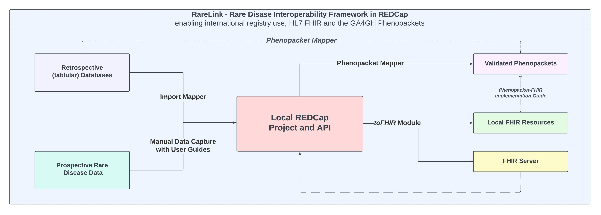

Overview
RareLink aims to maximise the utility of REDCap by providing a comprehensive framework designed specifically for rare disease (RD) research and care. At the core of RareLink is this documentation, the RareLink instruments that are based on the RD-CDM, its user guides and the surrounding preconfigured pipelines and software architecture. This framework ensures that data capture is both consistent and compliant with HL7 FHIR and GA4GH Phenopackets, without the need for additional coding or mapping. As a result, RareLink allows researchers and clinicians to collect and process rare disease data seamlessly within the REDCap environment.
RareLink Framework components
Semi-Automatic Import:
In many Rare Disease specialised centres, registries or hospitals, data is stored in tabular databases (e.g. Excel). RareLink’s Import Mapper that is utilising the Phenopacket Mapper API can be used to convert and import data from these databases into the REDCap RareLink format and your local REDCap project.
- Manual Data Capture:
RareLink provides a preconfigured data collection sheets based on the RD-CDM and user guides for manual data capture to ensure precision and correctness of data captured. Further, RareLink defines guidelines for developing more specialised REDCap sheets around the RD-CDM so that the data captured can also be processed by our framework to generate FHIR resources and Phenopackets.
User guide for Manual Data Capture of the RD-CDM.
User guide for developing and installing Extensional REDCap Instruments around the RareLink CDM.
- Local REDCap Project and API:
HERE you can find more information on how to create a local REDCap instance
in your institution, a new project, or activate your local API.
HERE you can find more information on how to set up the RareLink API in
your local REDCap project.
- RareLink & toFHIR:
RareLink utilises toFHIR from SRDC to convert the data captured in REDCap into FHIR resources. The RD-CDM and the corresponding RareLink instruments are preconfigured within our GitHub repository to generate International Patient Summary (IPS) FHIR resources and FHIR v4.0.1 resources automatically. HERE you can find more information on how to set up the RareLink API and toFHIR module in your local REDCap project to generate FHIR resources.
Repository: https://github.com/srdc/tofhirs
Website: https://onfhir.io/tofhir/
- RareLink & Phenopackets:
RareLink utilises the Phenopacket Mapper to convert the data captured in REDCap into Phenopackets. The RD-CDM and the corresponding RareLink instruments are preconfigured within our GitHub repository to generate Phenopackets automatically.
Repository: https://github.com/BIH-CEI/phenopacket_mapper
Documentation: https://bih-cei.github.io/phenopacket_mapper/latest/